한약조제 시스템
한의사의 처방에 따라 전문 한약사가 조제합니다. 자동화 시스템으로 시간·압력·온도를 조절하고 외부 오염을 차단한 상태에서 추출합니다.
- 1 · 실시간 전산 연동처방에 따라 전문 한약사가 조제
- 2 · 수질 관리24시간 관리하는 수처리실에서 정수된 물 사용
- 3 · 원료 보관항온·항습 시스템을 갖춘 약재보관실 이용
- 4 · 자동 탕전성분 추출과 침전물 감소를 고려한 맞춤 탕전
- 5 · 멸균 처리가압·가열 멸균
- 6 · 자체 배송조제에서 배송까지 과정 관리
약재부터 한약까지의 안전성 검사
잔류 농약·중금속 등 20여 가지 품질관리 검사를 실시하며, 재배환경부터 조제된 한약까지 세 단계로 유해성을 검사합니다.
- 재배환경: 산지의 생육 상태와 환경 검사
- 한약재: 한국의약품 시험연구원과 그린명품제약에서 유효성·유해성 등 전항목 교차 검사
- 한약: 조제된 한약의 유해성 최종 검사
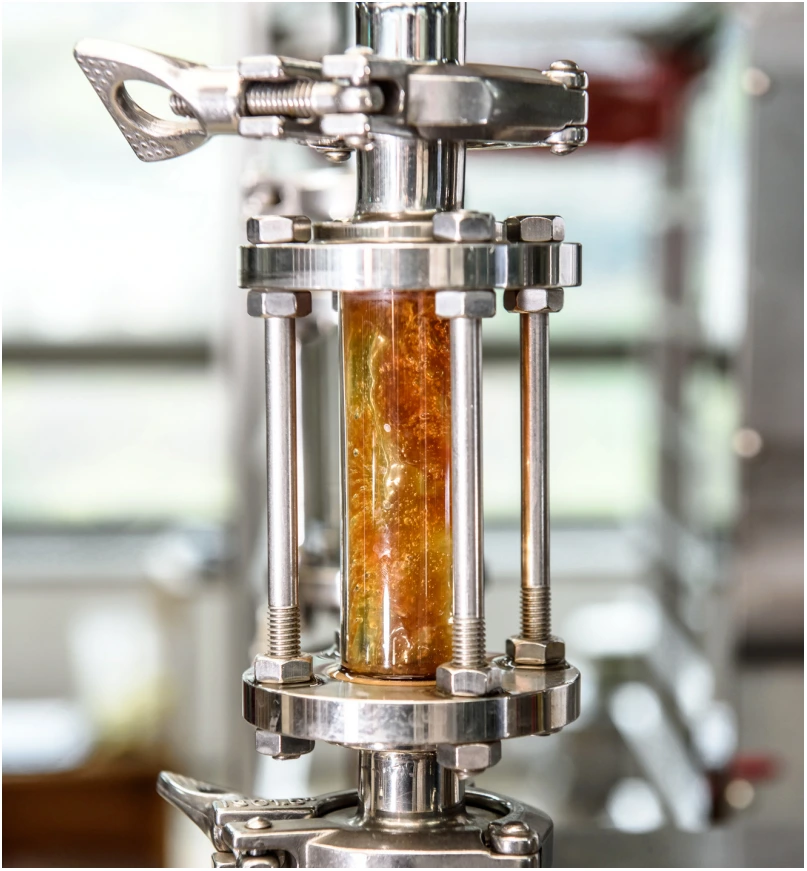
약재 품질관리
국가 위해 요소 기준을 통과한 약재와 식품의약품안전처의 한약재 제조 및 품질관리기준에 따라 인증된 회사의 한약규격품을 사용합니다. 구매 후에도 한약재품질평가위원회가 품질을 관리·감독하며, 항온·항습 환경에서 보관합니다.
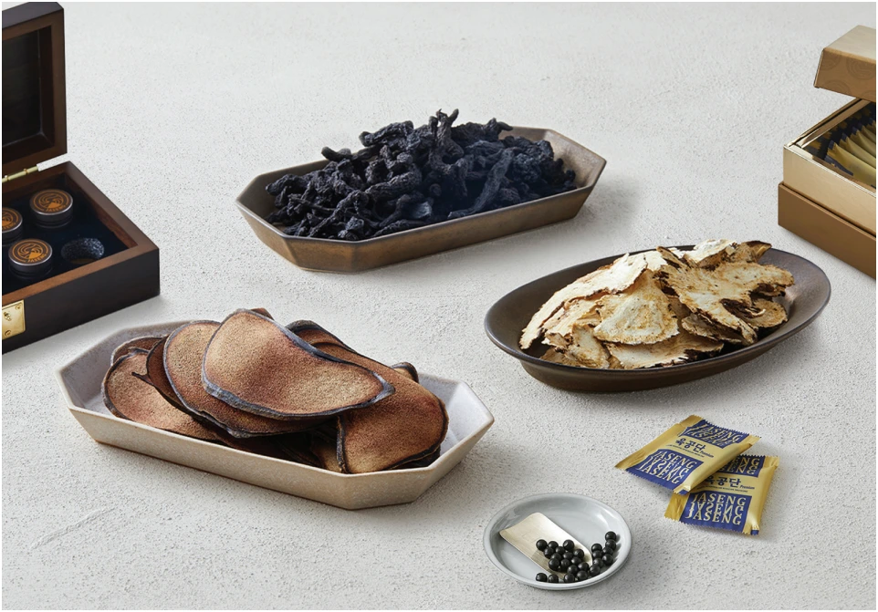
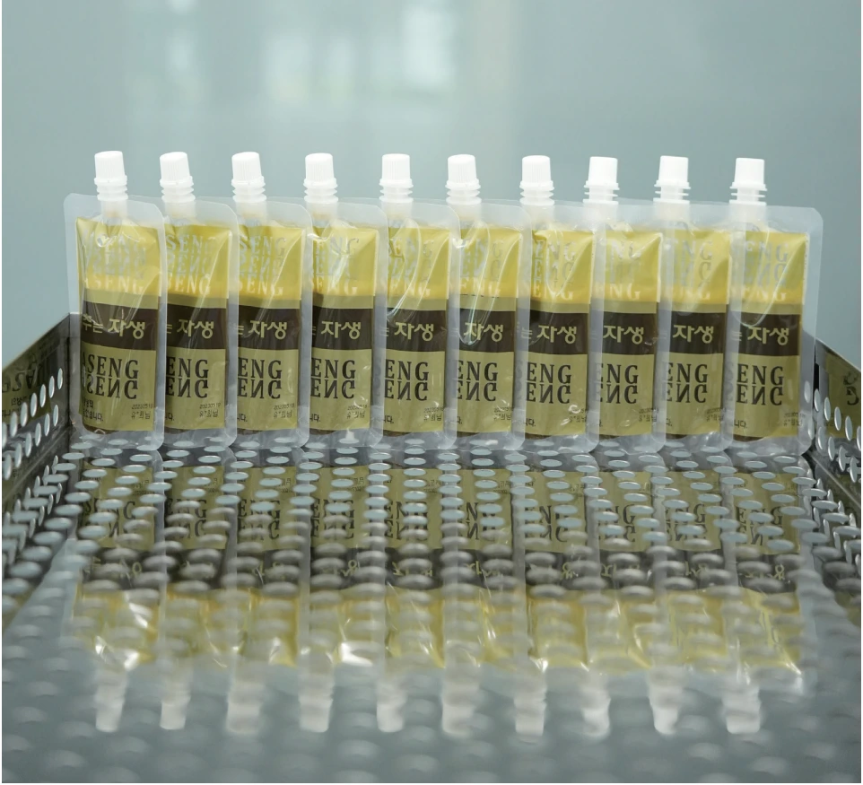
약침 조제와 품질관리
KGMP(한국우수의약품제조 및 품질관리기준)에 준하는 시설에서 맞춤 처방에 따라 조제합니다. 세척에서 씰링까지 자동화하고 무균 조제를 시행합니다.
무균 시험
모든 약침에 대해 무작위 추출 후 무균 시험을 실시합니다.
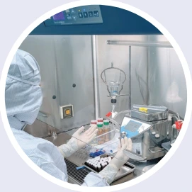
엔도톡신 시험
인체에 발열 반응을 일으키는 독성 물질인 엔도톡신을 분석합니다.
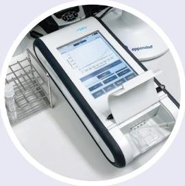
불용성 미립자 시험
주사제 기준에 준해 불용성 미립자를 시험합니다.
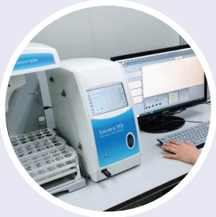
유기탄소 측정(TOC)
매 조제 시 주사용수의 총 유기탄소를 측정합니다.
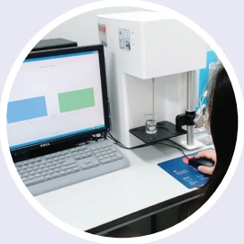
남양주원외탕전실은 2018년 인증제 도입 이후 최초로 약침 분야 원외탕전실 인증을 통과했습니다.
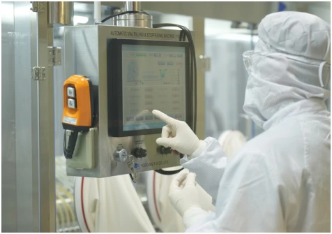
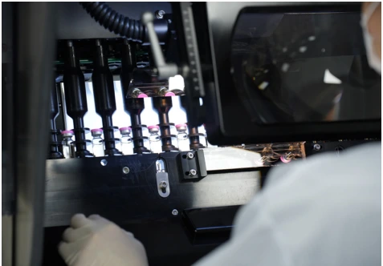
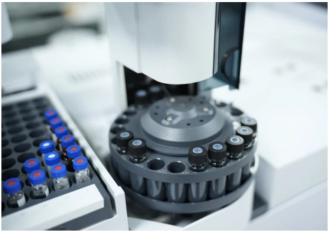
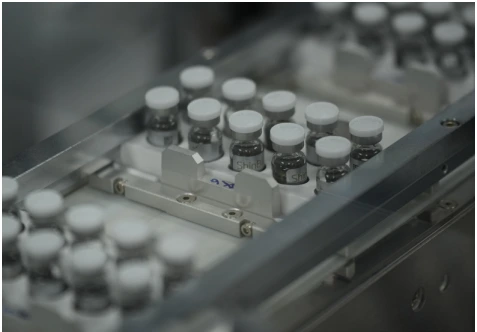
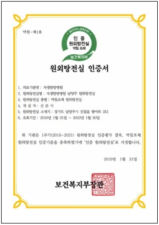
제이에스뮤지엄에서 만나는 자생의 역사
JS MUSEUM은 미디어와 현대 미술 전시로 자생의 역사와 철학을 소개합니다. 긍휼의 유산, 자생 비수술 치료, 자생 아카이브, 자생 오리진, 자생의 숲으로 구성되며 독립운동 정신과 한의학의 발전 과정을 다룹니다.
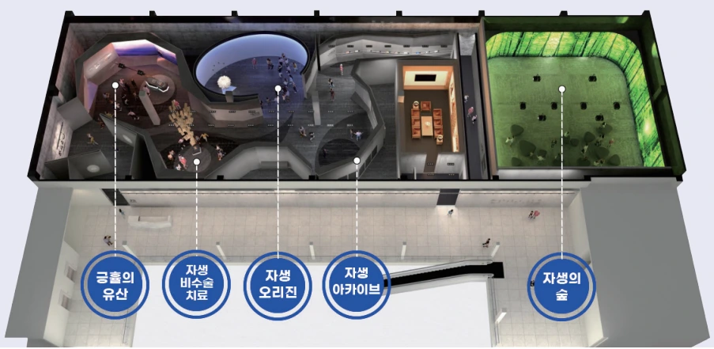